Thiết bị
35 loại máy đã thiết kế và chế tạo, phân theo ứng dụng. Ảnh được hiển thị khi có; mỗi máy đều được tùy biến theo sản phẩm của bạn.
Linh kiện máy sấy tóc 7
Máy tán khoen tự động cho đế khung nhiệt máy sấy tóc
Máy tán tự động đầu cốt điện trở phân áp máy sấy tóc
Máy tán tự động điện trở bộ gia nhiệt máy sấy tóc
Máy sản xuất tự động cầu chỉnh lưu máy sấy tóc
Máy lắp ráp tự động cụm cánh dẫn gió máy sấy tóc
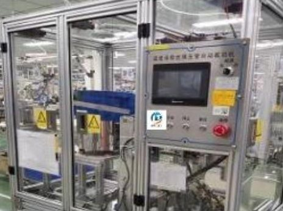
Máy cắt tự động theo chiều dài cầu chì nhiệt máy sấy tóc
Máy tra mỡ định lượng tự động vòng khóa tay cầm gập máy sấy tóc
Máy cạo râu, máy tỉa & tông đơ 8
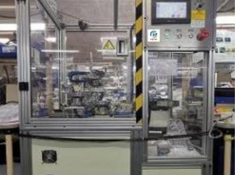
Máy lắp ráp tự động đế tiếp điểm (A) máy cạo râu
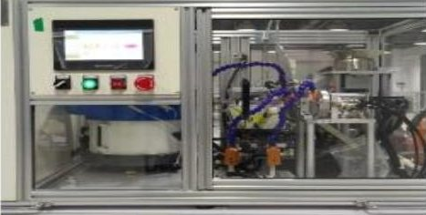
Máy lắp ráp tự động lò xo giá lưỡi máy cạo râu
Máy tích hợp cắt ống lót trục motor, thổi phoi và kiểm tra chiều quay cho máy cạo râu đầu xoay
Máy lắp ráp tự động cụm motor máy tỉa lông mũi
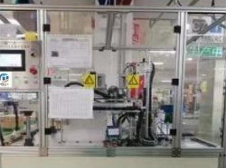
Máy ép tự động ống lót trục motor máy tỉa lông mũi
Máy lắp tự động trục con lăn máy cạo lông
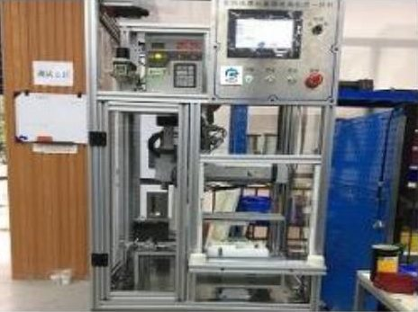
Máy tích hợp bắt vít và kiểm tra chống nước tông đơ
Máy tích hợp bắt vít tự động và kiểm tra chống nước máy cạo râu
Bàn chải điện 3
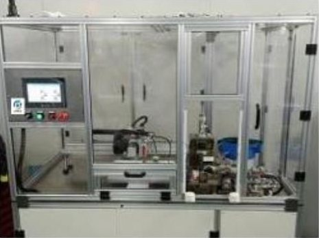
Máy ép trục motor bàn chải điện tự động
Máy hàn cao tần và đóng gói vỉ nhựa đầu bàn chải điện

Dây chuyền lắp ráp và kiểm tra bàn chải điện
Kiểm tra tuổi thọ, hiệu năng & độ kín khí 8
Máy thử tuổi thọ đầu lưỡi nổi máy cạo râu
Máy thử tuổi thọ lực ấn lưỡi máy cạo râu
Máy thử tuổi thọ công tắc máy cạo râu
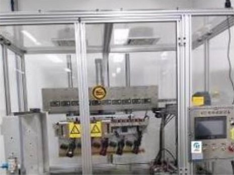
Thiết bị thử tuổi thọ vận hành khi ngâm nước nóng và lạnh cho máy cạo râu
Thiết bị đo biên độ đầu lưỡi máy cạo râu kiểu tịnh tiến
Máy thử tuổi thọ nhấn công tắc (lực không đổi)
Máy thử độ kín khí (chống nước) của thân máy
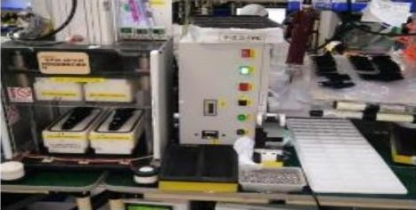
Thiết bị kiểm tra độ kín khí (chống nước)
Linh kiện điện tử 3
Máy cắt và tạo hình chân điốt tự động
Máy lồng ống bọc và tạo hình điện trở tự động
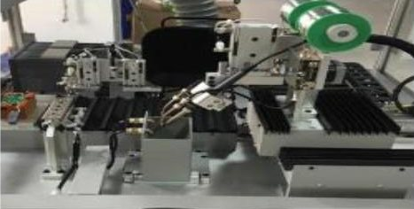
Máy hàn bo mạch tự động
Ép nhũ nóng & khắc dấu 4
Máy ép nhũ nóng tự động nắp bơm tròn (Ø48 / Ø32 mm)

Máy ép nhũ nóng tự động chữ rỗng định hình trên nắp mascara
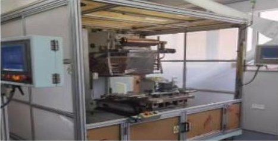
Máy ép nhũ nóng 10 tấn cho lưới tản nhiệt ô tô
Máy khắc và đánh dấu bằng laser
Dây chuyền hoàn chỉnh 2
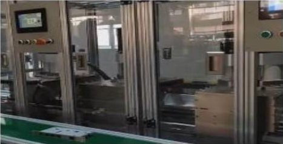
Dây chuyền hàn laser, lắp ráp và tán xoay khóa thông minh
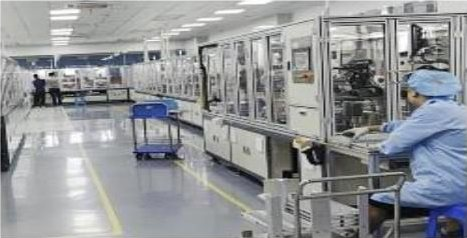
Dây chuyền lắp ráp và kiểm tra cụm sưởi nước PTC bảo vệ pin xe điện
Mô-đun kiểm tra bằng camera CCD 6
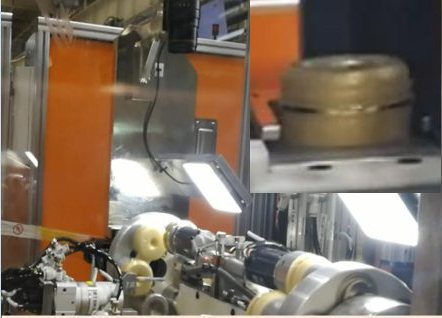
Phát hiện lỗi ép nhũ

Khắc laser định vị bằng camera
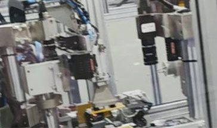
Lắp ráp định vị bằng camera
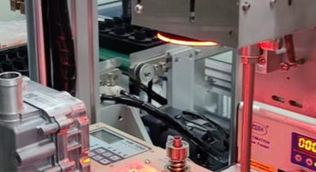
Bắt vít định vị bằng camera
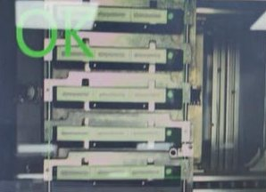
Kiểm tra đường keo
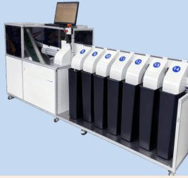
Phân loại nhiều loại vật liệu